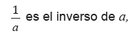
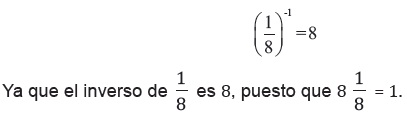
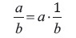
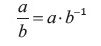
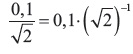
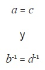
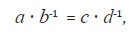
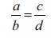
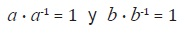

Potencias de base real y exponente racional
Para decidir si un número es inverso de otro, basta multiplicar los
números. Si el resultado es 1, la respuesta es afirmativa. Si el producto
no es 1, entonces ninguno de los números es el inverso del otro. Por
ejemplo,
1/2 es el inverso de 2
ya que 1/2 (2) es igual a 1 por la misma razón y 2 es el inverso de 1/2

equivale a afirmar que “a es el inverso de
1/a ”,ya que en ambos casos estamos aseverando que el producto de a y 1/a
es igual a 1.
Una de las propiedades de los números reales establece que todo
número real (a) , no nulo, tiene inverso multiplicativo. El inverso de a se
denota por a^-1.
Esto nos define las potencias de números reales para cuando el
exponente es -1.
Por ejemplo,

Cocientes de números reales.
El concepto de inverso permite definir cocientes de números reales. En
el caso del cociente a/b de dos enteros a y b, se cumple:

Definición: Si a y b son números reales, donde b ≠ 0, el cociente de a y b se define como:

Por ejemplo 0,1/√2 debe interpretarse como el producto de 0,1 por el inverso de √2
Es decir,

El inverso de √2 no es racional, pues de serlo, también lo sería √2 . Si a,b,c y d son números reales con b ≠ 0 y d ≠ 0, y si además se tiene que a = c y b = d, entonces:

de donde, por la compatibilidad de la multiplicación con la igualdad, se obtiene que:

es decir

Por tanto la toma de cociente también es compatible con la relación de igualdad. Consideremos un número real arbitrario a ≠ 0. Como a^-1 representa el inverso de a, esto equivale a decir que: a es el inverso de a^-1,
Si a y b son números reales distintos de cero, entonces, por definición

A partir de estas igualdades, utilizando la compatibilidad de la multiplicación con la igualdad, y agrupando adecuadamente,demuestre que a^-1 b^-1 es el inverso de a/b.